Chapter 11: Adverb — kaise, kab, kahan¶
Adverb — kaise, kab, kahan, kitna
Adverb wo shabd hai jo verb, adjective ya doosre adverb ke baare me batata hai. Adjective noun ko chhoota hai; adverb baaki sab ko. Do cheezein isme sabse zyada pakadti hain — pehla, -ly lagana bhool jaana ("she speaks good"), aur doosra, adverb ko galat jagah rakh dena ("I always am late"). Dono is chapter me theek ho jaayengi.
Ek line me
An adverb modifies a verb, an adjective, or another adverb. Noun ke alawa jiske baare me bataya jaaye — wo adverb ka kaam hai.
- He drove carefully. Verb ke baare me — kaise chalaya?
- The exam was very easy. Adjective ke baare me — kitna aasaan?
- She sings quite beautifully. Doosre adverb ke baare me — kitni khoobsurti se?

11.1 Adverb ke prakaar¶
| Prakaar | Sawaal | Examples | Vaakya me |
|---|---|---|---|
| Manner | Kaise? | slowly, carefully, well, badly, loudly | She writes neatly. |
| Time | Kab? | now, then, today, yesterday, soon, already, yet | He left yesterday. |
| Place | Kahan? | here, there, outside, upstairs, everywhere, nearby | Wait outside. |
| Frequency | Kitni baar? | always, usually, often, sometimes, rarely, never | I always walk to work. |
| Degree | Kitna? | very, too, so, quite, almost, enough, hardly | It is too hot. |
| Affirmation / negation | Haan ya na? | certainly, surely, definitely, not, never | I certainly agree. |
| Reason | Kyun? | therefore, hence, thus, consequently | He was ill; therefore he stayed home. |
| Interrogative | sawaal poochhna | when, where, why, how | Why are you late? |
| Relative | do hisson ko jodna | where, when, why | This is the place where we met. |
Interrogative aur Relative adverb — same shabd, alag kaam¶
where, when, why (aur sawaal me how) do tarah se aate hain. Sawaal ke shuru me ho to interrogative adverb. Kisi noun (place, time, reason) ke turant baad aakar uske baare me poora hissa jode, to relative adverb.
| Shabd | Interrogative (sawaal) | Relative (jodna) |
|---|---|---|
| where | Where do you live? | the place where we met |
| when | When does the film start? | the day when I joined |
| why | Why is she crying? | the reason why he left |
| how | How did you do it? | (relative me aksar nahi — "the way" bolo) |
- This is the café where we first met. "where" = jahan — jagah (café) ke baare me poori baat jod raha hai.
- I still remember the day when I got my first job. "when" = jab — samay (day) ke baad aaya.
- Tell me the reason why you are upset. "why" = kyun — "reason" ke baad.
Relative adverb ka chhota rule
where = in which / at which (jagah) · when = on which / in which (samay) · why = for which (kaaran).
✓ the house where I was born = the house in which I was born. Relative adverb ke baad poora vaakya (subject + verb) aata hai, aur sawaal wala ulta kram nahi: ✗ "the place where did we meet" → ✓ "the place where we met".
'the way how' — double mat karo
- Galat: I like the way how she speaks.
- Sahi: I like the way she speaks. / I like how she speaks.
- Kyun: "the way" aur "how" ka matlab ek hi hai — dono me se ek lagao.
Frequency ko paimaane par rakho
always (100%) → usually → often → sometimes → occasionally → rarely / seldom → hardly ever → never (0%). Interview me "I sometimes make mistakes" kehna "I never make mistakes" se zyada bharosemand lagta hai.
11.2 Adverb banane ke rule¶
| Adjective kaise khatam hota hai | Kya karo | Example |
|---|---|---|
| Normal | + ly | quick → quickly |
| consonant + y | y → ily | happy → happily, easy → easily |
| -le | e → y | simple → simply, gentle → gently |
| -ic | + ally | basic → basically, tragic → tragically |
| -ll | + y | full → fully, dull → dully |
| -ue | e hatao, + ly | true → truly, due → duly |
Ye adverb -ly nahi lete — roop wahi rehta hai
| Shabd | Adjective me | Adverb me |
|---|---|---|
| fast | a fast train | drives fast |
| hard | hard work | works hard |
| late | a late train | came late |
| early | an early bus | woke up early |
| straight | a straight line | go straight |
| high | a high wall | flew high |
"fastly" aur "hardly work" dono galat hain — "hardly" ka matlab hai bilkul nahi: He hardly works = wo kaam hi nahi karta!
-ly lagne se matlab badal jaane wale jode
| Bina -ly | -ly ke saath |
|---|---|
| hard = mehnat se (He works hard.) | hardly = bilkul nahi (He hardly works.) |
| late = der se (She came late.) | lately = haal hi me (I haven't seen her lately.) |
| near = paas (He lives near.) | nearly = lagbhag (I nearly fell.) |
| short = chhota (Cut it short.) | shortly = jald hi (He will arrive shortly.) |
| high = ooncha (Birds fly high.) | highly = bahut (She is highly qualified.) |
11.3 Adverb ki jagah — yahan sabse zyada galti hoti hai¶
Adverb ki jagah uske prakaar se tay hoti hai. Chaar pakke patterns hain, aur ye chaar yaad ho gaye to bolchaal apne aap sudhar jaati hai.
Frequency adverb ka pakka rule
Main verb se pehle — I always wake up early.
"be" verb ke baad — She is always busy.
Helping verb ke baad — They have never been to Kerala. Ek line me: "be" ke baad, baaki sab se pehle.
Jagah ki galtiyan
- Galat: I always am ready on time.
- Sahi: I am always ready on time.
-
Kyun: "be" verb (am) ke baad frequency adverb aata hai — yahi ek apvaad hai.
-
Galat: She speaks fluently English.
- Sahi: She speaks English fluently.
-
Kyun: Verb aur uske object ke beech me adverb nahi aata. Pehle kaam poora karo (speaks English), phir batao kaise.
-
Galat: He went yesterday to the market.
- Sahi: He went to the market yesterday.
- Kyun: Place pehle, time baad me — manner → place → time ka kram.
Shuruaat me adverb — zor dene ke liye
Adverb vaakya ke shuru me bhi rakha ja sakta hai, tab wo poore vaakya par asar daalta hai: Suddenly, the lights went off. / Honestly, I didn't know. Aise waqt comma lagana behtar hai.
11.4 Adverb ka comparative aur superlative¶
Adjective jaisa hi hai, par ek farq ke saath: -ly wale adverbs me hamesha more / most lagta hai.
| Kaise banta hai | Positive | Comparative | Superlative |
|---|---|---|---|
| -ly wale → more / most | carefully | more carefully | most carefully |
| -ly wale → more / most | quickly | more quickly | most quickly |
| Chhote (bina -ly) → er / est | fast | faster | fastest |
| Chhote (bina -ly) → er / est | hard | harder | hardest |
| Chhote (bina -ly) → er / est | late | later | latest |
| Irregular | well | better | best |
| Irregular | badly | worse | worst |
| Irregular | little | less | least |
| Irregular | much | more | most |
| Irregular | far | farther / further | farthest / furthest |
- Ravi runs faster than his brother. "fast" chhota hai, isliye -er.
- She explained it more clearly than the teacher. "clearly" me -ly hai, isliye more.
- Of all the students, he writes the most neatly. Superlative — teen ya zyada ki tulna.
11.5 Adverb vs Adjective — ek second ka test¶
Poochho: kiske baare me bata raha hai?
Noun ke baare me → adjective. Verb ke baare me → adverb.
a loud noise (noun) · shouted loudly (verb)
Linking verb ke baad adjective aata hai, adverb nahi
✓ The food smells good. ✗ smells well
✓ She looks tired. ✗ looks tiredly
Kyunki ye verb subject ke baare me bata rahe hain, kaam ke baare me nahi. Ek apvaad: He looks well = uski sehat theek hai.
11.6 Wo galtiyan jo hum sach me karte hain¶
Adverb ki aam Indian-English galtiyan
- Galat: She speaks English very good.
- Sahi: She speaks English very well.
-
Kyun: "speaks" verb hai, isliye adverb chahiye — well. "good" sirf noun ke saath: her English is good. Ye jodi — good/well — sabse zyada pakadti hai.
-
Galat: He is more taller and runs more faster.
- Sahi: He is taller and runs faster.
-
Kyun: "taller" aur "faster" dono me -er pehle se comparison bana chuka hai. -ly wale adverb me more lagta hai (more slowly), par chhote adverb me -er.
-
Galat: I always am late for meetings.
- Sahi: I am always late for meetings.
-
Kyun: Frequency adverb "be" verb ke baad aata hai — am always, is never, are usually. Baaki saare verbs se pehle: always come, never eat.
-
Galat: He drives his car fastly.
- Sahi: He drives his car fast.
-
Kyun: "fastly" English me shabd hi nahi hai. "fast" khud adverb hai. Isi list me: hard, late, early, straight, high — inme -ly nahi lagta.
-
Galat: She explained very nicely the problem.
- Sahi: She explained the problem very nicely.
-
Kyun: Verb aur object ke beech adverb nahi ghusaate. Pehle "explained the problem", phir batao kaise.
-
Galat: He hardly works, that's why he got promoted.
- Sahi: He works hard, that's why he got promoted.
-
Kyun: "hardly" ka matlab hai lagbhag nahi — ulta matlab ho gaya! Mehnat batani ho to "works hard" bolo.
-
Galat: I am very much tired today.
- Sahi: I am very tired today.
-
Kyun: Adjective ke saath sirf "very" aata hai. "very much" verb ke saath chalta hai: I like it very much.
-
Galat: He don't come here never.
- Sahi: He doesn't come here. / He never comes here.
- Kyun: Do galtiyan: "he" ke saath doesn't, aur ek vaakya me do negative nahi (doesn't + never). "never" khud negative hai, isliye uske saath normal verb aata hai.
11.7 Chhota naksha¶
| Adverb ka prakaar | Jagah | Example |
|---|---|---|
| Manner | object ke baad, vaakya ke aakhir me | She read the letter slowly. |
| Frequency | main verb se pehle / "be" ke baad | He often calls. · He is often busy. |
| Time | aakhir me (ya shuru me zor ke liye) | We met yesterday. |
| Place | manner ke baad, time se pehle | He sat quietly in the corner. |
| Degree | jiske baare me bata raha hai, usse turant pehle | It is too cold. |
11.8 Practice — Adverbs¶
Exercise 1
She speaks English very ___.
- well
- good
- better
- goodly
Hint: 'speaks' kaunsa part of speech hai?
Jawaab
well
'speaks' verb hai, aur verb ke baare me batane ke liye adverb chahiye. 'good' ka adverb 'well' hai — 'good' sirf noun ke saath aata: her English is good.
Exercise 2
Kaunsa vaakya sahi hai?
- She is always on time.
- She always is on time.
- Always she is on time.
- She is on time always.
Hint: Frequency adverb aur 'be' verb ka rule.
Jawaab
She is always on time.
Frequency adverb 'be' verb ke baad aata hai — is always, am never, are usually. Baaki saare verbs se pehle aata hai: always comes, never eats.
Exercise 3
He drives ___ than his father.
- faster
- more fast
- more faster
- fastly
Hint: 'fast' me -ly hai ya nahi?
Jawaab
faster
'fast' chhota adverb hai aur usme -ly nahi hai, isliye -er lagta hai. -ly wale adverbs me 'more' lagta hai: more carefully, more slowly.
Exercise 4
'He hardly works.' — iska matlab kya hai?
- Wo kaam hi nahi karta
- Wo bahut mehnat karta hai
- Wo kabhi-kabhi kaam karta hai
- Wo theek kaam karta hai
Hint: hard aur hardly do alag shabd hain.
Jawaab
Wo kaam hi nahi karta
'hardly' ka matlab hai lagbhag nahi — ye 'hard' ka adverb nahi hai. Mehnat batani ho to 'works hard' bolo, bina -ly.
Exercise 5
The child was crying ___. (adverb of 'loud')
Hint: Normal adjective me kya lagta hai?
Jawaab
loudly
Normal adjective me -ly lagane se adverb banta hai — loud se loudly. Yahan 'crying' verb hai, isliye adverb chahiye.
Exercise 6
She solved the puzzle ___ than I did. (comparative of 'easily')
Hint: -ly wale adverb me kya lagta hai?
Jawaab
more easily
-ly par khatam hone wale adverbs me 'more' lagta hai, -er nahi. 'easilier' jaisa koi shabd nahi hota.
Exercise 7
Is vaakya me ek shabd galat jagah par hai — us par tap karo.
She speaks fluently Hindi and Marathi.
Jawaab
Galat shabd: fluently.
Sahi roop: She speaks Hindi and Marathi fluently.
Verb aur uske object ke beech adverb nahi aata. Pehle kaam poora karo — speaks Hindi and Marathi — phir batao kaise.
Exercise 8
Galat shabd dhoondo.
He drives his new car very fastly.
Jawaab
Galat shabd: fastly.
Sahi roop: He drives his new car very fast.
'fastly' English me shabd hi nahi hai — 'fast' khud adverb hai. Isi list me hard, late, early, straight bhi hain.
Exercise 9
Ek shabd galat jagah par hai.
I always am ready before eight.
Jawaab
Galat shabd: always.
Sahi roop: I am always ready before eight.
'be' verb (am) ke baad frequency adverb aata hai — yahi ek apvaad hai. Baaki verbs me adverb pehle: I always wake up early.
Exercise 10
'This is the school where my father studied.' — yahan 'where' kya hai?
- relative adverb
- interrogative adverb
- adverb of place
- preposition
Hint: Ye sawaal hai ya noun ke baad jod raha hai?
Jawaab
relative adverb
'where' noun 'school' ke baad aakar uske baare me poora hissa jod raha hai — relative adverb. 'Where did he study?' me wo sawaal poochh raha hota — interrogative.
Exercise 11
I will never forget the day ___ we won the cup.
Hint: Samay (day) ke baad kaunsa relative adverb?
Jawaab
when
Samay ke noun (day, year, time) ke baad 'when'. Jagah ke baad 'where', kaaran (reason) ke baad 'why'.
Exercise 12
Ek shabd faltu hai — us par tap karo.
I love the way how my mother cooks.
Jawaab
Galat shabd: how.
Sahi roop: I love the way my mother cooks.
'the way' aur 'how' ka matlab ek hi hai — dono saath nahi aate. 'the way my mother cooks' ya 'how my mother cooks'.
Exercise 13
Adverb ko uske prakaar se jodo.
| A | B |
|---|---|
| slowly | place — kahan |
| yesterday | frequency — kitni baar |
| outside | degree — kitna |
| rarely | manner — kaise |
| almost | time — kab |
Jawaab
slowly — manner — kaise; yesterday — time — kab; outside — place — kahan; rarely — frequency — kitni baar; almost — degree — kitna
Adverb ka prakaar us sawaal se tay hota hai jiska wo jawaab deta hai. Aur prakaar se hi uski vaakya me jagah tay hoti hai.
Exercise 14
Sahi kram me vaakya banao — manner, place, time ka kram yaad rakho.
Shabd: concert / the / at / last / beautifully / played / He / night
Jawaab
He played beautifully at the concert last night
Kai adverbs ek saath aayein to kram hota hai manner (kaise) → place (kahan) → time (kab). Ye kram todne se vaakya ajeeb lagta hai.
Exercise 15
Ye line bol ke dekho — 'well' saaf bolna hai, 'good' nahi.
Jawaab
Bolo: She speaks English very well
Hum log 'very good' bolne ki aadat me 'well' chhod dete hain. Zor se 'well' bolne ki practice se ye aadat tootti hai.
Aage kya karein
Aaj se jab bhi "good" bolne ka man kare, poochho — "kya main kisi kaam ke baare me bata raha hoon?" Agar haan, to "well" bolo. Agla chapter Preposition hai, aur uske baad Conjunction.